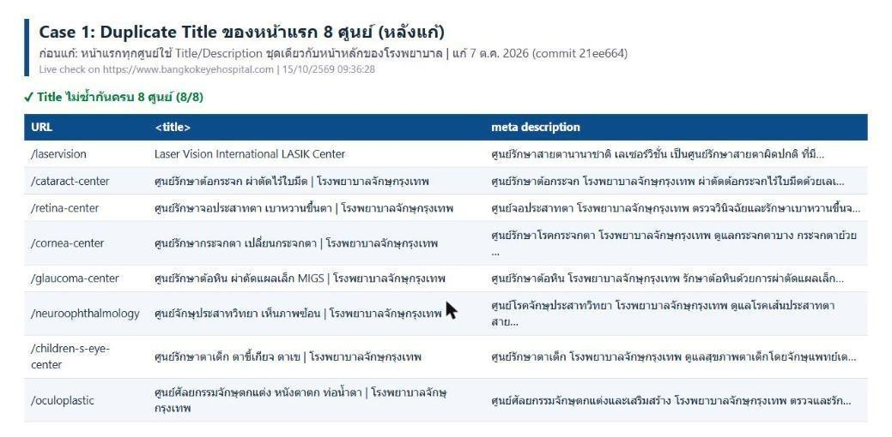

CASE 01 / TECHNICAL SEO
Distinct page titles for each centre
8 / 8centres with unique titles
- Challenge
- Eight centres inherited the homepage title and description.
- Action
- Corrected the selection logic and cache key so each centre uses its own metadata.
- Verified in portfolio
- Verified unique titles across all eight centres.

Open evidence image ↗Evidence from portfolio, page 7